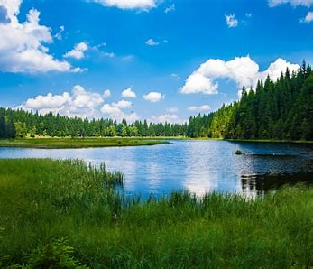

If you are debating on where to go this summer, you should choose a lake! Lakes are a great option if your in need of some relaxation and fun. A lake is a body of water, usually freshwater, that is surrounded by land. Lakes are home to a variety of plants and animals and hopefully you this summer.
There are a vast amount of activities that can be done on a lake. Many people who live on the lake own a type of boat. Two popular types of boats are a pontoon or a wakeboat. Both types of boats make a day on the lake exceptionally fun.
| Water | Other |
|---|---|
| tubing | fishing |
| wakeboarding | watching sunset |
| kneeboarding | campfire |